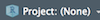

Chapter 1 Why learn to program (now)?
With lower computing costs, lower storage costs for digital data, and the diffusion of the Internet, we have recently witnessed a stark increase in the availability of digital data describing all kind of every-day human activities (Einav and Levin 2014; Matter and Stutzer 2015). As a consequence, new business models and economic structures are emerging with data as their core commodity (i.e., AI-related technological and economic change). A ‘data-driven’ economy heavily relies on processing/analyzing/handling large amounts of digital data.
The need for proper handling of large amounts of digital data has given rise to the interdisciplinary field of ‘Data Science’ as well as an increasing demand for ‘Data Scientists.’ While nothing within Data Science is particularly new on its own, it is the combination of skills and insights from different fields (particularly Computer Science and Statistics) that has proven to be very productive in meeting new challenges posed by a data-driven economy. The various facets of this new craft are often illustrated in the ‘Data Science’ Venn-Diagram (see, for example, http://berkeleysciencereview.com/how-to-become-a-data-scientist-before-you-graduate/), reflecting the combination of knowledge and skills from Mathematics/Statistics, substantive expertise in the particular scientific field in which Data Science is applied, and ‘hacking skills,’ that is, the skills necessary for acquiring, cleaning, and analyzing data programmatically.
Apart from the current ‘Data Science developments’ and the related career opportunities for young economists, learning to program comes with many benefits for academic work in graduate economics. Many of the courses in your curriculum will at least partially touch upon practical programming exercises or concepts related to programming and scientific computing in an environment like R.
1.1 Why R?
1.1.1 The ‘data language’
The programming language and open-source statistical computing environment R has over the last decade become a core tool for data science in industry and academia. It was originally designed as a tool for statistical analysis. Many characteristics of the language make R particularly useful to work with data. With the rise of the ‘data economy’ and ‘data science,’ R is increasingly used in various domains, going well beyond the traditional applications of academic research.
1.1.2 High-level language, relatively easy to learn
R is a relatively easy computer language to learn for people with no previous programming experience. The syntax is rather intuitive and error messages are not too cryptic to understand (this facilitates learning by doing). Moreover, with R’s recent stark rise in popularity, there are plenty of freely accessible resources online that help beginners to learn the language.
1.1.3 Free, open source, large community
Due to its vast base of contributors, R serves as a valuable tool for users in various fields related to data analysis and computation (economics/econometrics, biomedicine, business analytics, etc.). R users have direct access to thousands of freely available ‘R-packages’ (small software libraries written in R), covering diverse aspects of data analysis, statistics, data preparation, and data import.
Hence, a lot of people using R as a tool in their daily work do not actually ‘write programs’ (in the traditional sense of the word), but apply R packages. Applied econometrics with R is a good example of this. Almost any function a modern commercial computing environment with a focus on statistics and econometrics (such as STATA) is offering, can also be found within the R environment. Furthermore, there are R packages covering all the areas of modern data analytics, including natural language processing, machine learning, big data analytics, etc. (see the CRAN Task Views for an overview). We thus do not actually have to write a program for many tasks we perform with R. Instead, we can build on already existing and reliable packages.
1.2 The tools: R/RStudio
R is the high-level (meaning ‘more user friendly’) programming language for statistical computing. Once we have installed R on our computer, we can run it…
- …directly from the command line, by typing
Rand hit enter (here in the OSX terminal):

Figure 1.1: Running R in the Mac/OSX terminal.
- …with the simple Integrated Development Environment (IDE) delivered with the basic R installation

Figure 1.2: Running R in the original R GUI/IDE.
- …or with the more elaborated and user-friendly IDE called RStudio (either locally or in the cloud, see, for example RStudio Cloud:
Figure 1.3: Running R in RStudio (IDE).
The latter is what we will do throughout this course. RStudio is a very helpful tool for simple data analysis with R, writing R scripts (short R programs), or even for developing R packages (software written in R), as well as building interactive documents, presentations, etc. Moreover, it offers many options to change its own appearance (Pane Layout, Code Highlighting, etc.).
In the following, we have a look at each of the main panels that will be relevant in this course.
1.2.1 The R-Console
When working in an interactive session, we simply type R commands directly into the R console. Typically, the output of executing a command this way is also directly printed to the console. Hence, we type a command on one line, hit enter, and the output is presented on the next line.
Figure 1.4: Running R in the Mac/OSX terminal.
For example, we can tell R to print the phrase Hello world to the console, by typing to following command in the console and hit enter:
print("Hello world")## [1] "Hello world"1.2.2 R-Scripts
Apart from very short interactive sessions, it usually makes sense to write R code not directly in the command line but to an R-script in the script panel. This way, we can easily execute several lines at once, comment the code (to explain what it does), save it on our hard disk, and further develop the code later on.
Figure 1.5: The R Script window in RStudio.
1.2.3 R Environment
The environment pane shows what variables, objects, and data are loaded in our current R session. Moreover, it offers functions to open documents and import data.

Figure 1.6: The environment window in RStudio.
1.2.4 File Browser
With the file browser window we can navigate through the folder structure and files on our computer’s hard disk, modify files, and set the working directory of our current R session. Moreover, it has a pane to show plots generated in R and a pane with help pages and R documentation.
Figure 1.7: The file browser window in RStudio.
1.3 Exercises
1.3.1 Exercise A: Setting up a Working Environment
Open RStudio and get familiar with the file browser pane on the lower right. Navigate to a folder on your hard disk in which you want to work throughout this course (and store all the code you write in this course).
Use the ‘New Folder’-button to create a new folder. Name this new folder
r_course.You should see the new folder listed in the file browser. Click on it to navigate to its contents (so far empty). Now, click on the ‘More’ button and select ‘Set as Working Directory’ in the drop-down menu.
Again, use the ‘New Folder’-button in order to create two new folders called
dataandcode.Finally, click on the project button in the top-right corner of the RStudio window () and select ‘New Project’ in the drop-down menu. In the pop-up window, select ‘Existing directory,’ browse to and select your
r_coursefolder, then click ‘Create Project.’
Now you know how to set up a meaningful basic folder structure and working environment for an R project. The next exercise teaches you how to write R scripts in this environment.
1.3.2 Exercise B: R Scripts
- Switch to the R console and type the following line of code and hit enter (see example from above).
print("Hello world")You should see the words "Hello world" printed on screen. This is the usual way of working with R in an interactive session. However, as pointed out above, in most circumstances it makes sense to write the R code to an R script (in order to store and document it) and then execute the code from there.
In the RStudio menu bar select
File/New File/R Scriptto create a new file, shown/opened in the Script pane.Type
print("Hello world")to the first line of the script, and click on ‘Run’ () to execute the code in the console.Save the file as
hello_world.R(File/Save As...) in the sub foldercode(created in the previous exercise).Type the following command into the command line and hit enter:
source("code/hello_world.R")## [1] "Hello World!"Now you know how to execute R code directly in the console (interactive session), how to execute lines of code written to an R script, as well as how to execute the entire R script (stored on disk) from the command line.